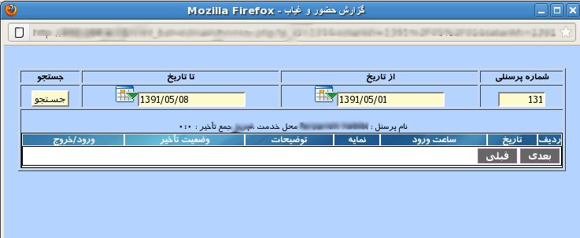

۱-حضور و غیاب
پنل حضور و غیاب, برای مدیریت بر ورود و خروج کاربران طراحی شده است. در این پنل ابتدا شماره پرسنلی را وارد و سپس بازه تاریخی مورد نظر را از تقویم تعبیه شده در صفحه انتخاب نمایید. سپس بر روی دکمه جستجو کلیک نمایید.

جدولی حاوی نتیجه جستجو نمایش داده می شود که شامل نام و نام خانوادگی کاربر, محل خدمت, ساعت ورود, تصویر کاربر, توضیحات در مورد کاربر, تاخیرها و ورود و خروج ثبت شده است.